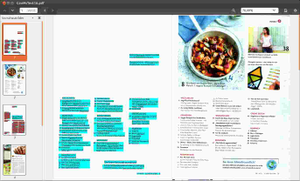

OCRmyPDF
Dieser Artikel wurde für die folgenden Ubuntu-Versionen getestet:
Ubuntu 16.04 Xenial Xerus
Ubuntu 14.04 Trusty Tahr
Zum Verständnis dieses Artikels sind folgende Seiten hilfreich:
 OCRmyPDF
OCRmyPDF  ist ein Kommandozeilenprogramm, um für eingescannte PDF-Dateien eine durchsuchbare Textebene zu erstellen. Das Resultat wird im PDF/A1-b-Format, seit Version 3.1 als PDF/A2-b gespeichert. Für die Texterkennung kommt Tesseract zum Einsatz.
ist ein Kommandozeilenprogramm, um für eingescannte PDF-Dateien eine durchsuchbare Textebene zu erstellen. Das Resultat wird im PDF/A1-b-Format, seit Version 3.1 als PDF/A2-b gespeichert. Für die Texterkennung kommt Tesseract zum Einsatz.
Des Weiteren werden verschiedene PDF-Programme (Ghostscript, poppler-utils, pdftk) und Grafik-Anwendungen (ImageMagick, unpaper) verwendet, außerdem Python und einige Python-PDF-Module sowie eine Java-Installation. Das Programm überprüft bei Erstaufruf, ob die benötigten Programme installiert sind, und gibt bei fehlenden Teilen entsprechende Hinweise aus. Die Passung der Textlage ist sehr gut, die Verarbeitung sehr zuverlässig, die Dateigrößen akzeptable, und die Verwendung des PDF/A-1b-Standards für das Ergebnis kann unter Ubuntu momentan wohl sonst kein anderes Programm bieten.
Hinweis:
PDF-Dateien, die direkt aus LibreOffice oder anderen Textbearbeitungsprogrammen erstellt wurden, sind in der Regel keine "grafischen" PDF-Dateien und lassen sich auch so durchsuchen. Eine zusätzliche Textlage ist daher nicht nötig. Version 2.x.x erstellt zumindest eine PDF/A-Version solcher PDF-Dateien.
Installation¶
OCRmyPDF ist ab Ubuntu 16.10 in den offiziellen Paketquellen enthalten. Folgendes Paket muss installiert werden[1]:
ocrmypdf (universe)
 mit apturl
mit apturl
Paketliste zum Kopieren:
sudo apt-get install ocrmypdf
sudo aptitude install ocrmypdf
Python-Paketmanager¶
Dieser Abschnitt erklärt die Installation mittels pip. Folgendes Paket wird zuerst benötigt:
python3-pip
mit apturl
Paketliste zum Kopieren:
sudo apt-get install python3-pip
sudo aptitude install python3-pip
Unter Ubuntu 16.04 sollten vorher folgende Befehle ausgeführt werden:
sudo pip3 install --upgrade pip ## Upgrade von pip 8.1.1 auf die aktuelle pip-Version sudo apt-get install libffi-dev
Ocrmypdf wird dann mittels
sudo pip3 install ocrmypdf
installiert. Dabei werden alle Abhängigkeiten direkt installiert, auch die Verlinkung zur systemweiten Nutzung (s.u.) ist nicht nötig.
Installiert wird damit (Stand März 2017) die ocrmypdf-Version 4.5.2. Eine ältere ocrmypdf muss ggf. erst entfernt werden (z.B. durch Entfernen/Umbenennen des Ordners /usr/lib/python3/dist-packages/ocrmypdf-X.X.X.dist-info mit Root-Rechten[5]).
Manuell¶
Zur Nutzung werden folgende Pakete benötigt:
imagemagick
parallel
poppler-utils
pdftk
unpaper
tesseract-ocr (sowie gewünschte Sprachpakete)
python-reportlab
python-lxml
python-imaging
ghostscript
mit apturl
Paketliste zum Kopieren:
sudo apt-get install imagemagick parallel poppler-utils pdftk unpaper tesseract-ocr python-reportlab python-lxml python-imaging ghostscript
sudo aptitude install imagemagick parallel poppler-utils pdftk unpaper tesseract-ocr python-reportlab python-lxml python-imaging ghostscript
Außerdem wird eine Java-Laufzeitumgebung (JRE) vorausgesetzt, um die PDF/A-Kompatibilität testen zu können. Dazu kann OpenJDK 7 oder neuer verwendet werden.
Das Programm selbst wird von der Projektseite Downloadseite  als .zip- oder tar.gz-Archiv bezogen und entpackt[2] (z.B. nach /opt), das eigentliche Skript OCRmyPDF.sh muss ausführbar gemacht werden[3]. Eine eigentliche "Installation" ist z.Z. nicht vorgesehen.
als .zip- oder tar.gz-Archiv bezogen und entpackt[2] (z.B. nach /opt), das eigentliche Skript OCRmyPDF.sh muss ausführbar gemacht werden[3]. Eine eigentliche "Installation" ist z.Z. nicht vorgesehen.
Systemweite Nutzung¶
Zur systemweiten Nutzung kann das Hauptskript über eine symbolische Verknüpfung nach OCRmyPDF in usr/local/bin (im Terminal[4], Root-Rechte nötig[5]!) verbunden werden, ebenso für die Ordner src und jhove, da sie auf derselben Ebene wie das Hauptskript erwartet werden:
sudo ln -s /PFAD/ZU/OCRmyPDF.sh /usr/local/bin/ocrmypdf # Hauptskript sudo ln -s /PFAD/ZU/OCRmyPDF-2.x.x/src/ /usr/local/bin/src # src-Ordner, OCRmyPDF-Ordner auf verwendete Version anpassen! sudo ln -s /Pfad ZU/OCRmyPDF-2.x.x/jhove/ /usr/local/bin/jhove # jhove-Ordner, OCRmyPDF-Ordner auf verwendete Version anpassen!
Standard-Sprache anpassen¶
Die Standard-Sprache kann im Hauptskript auch auf andere Tesseract-Sprachen eingestellt werden. Dazu in ca. Zeile 76 statt eng das Kürzel der bevorzugten Tesseract-Sprache einsetzen (die natürlich installiert sein muss).
Benutzung¶
Die allgemeine Syntax auf der Kommandozeile lautet dann bei systemweiter Installation:
ocrmypdf [OPTION(EN)] EINGABE.pdf AUSGABE.pdf
Funktionsweise¶
|  |
Mit -g-Option erstelltes PDF in Evince |
Die Eingabedatei ist eine rein "grafische", auch mehrseitige, PDF-Datei. Diese wird seitenweise ausgemessen (mit identify aus ImageMagick), und die Seiten in ppm/pgm-Dateien umgewandelt (das Programm erkennt, ob es sich um farbige oder schwarzweiße Vorlagen handelt). Optional werden diese Dateien geradegezogen (convert mit -deskew-Option) und gesäubert (unpaper). Aus diesen Vorlagen werden mit tesseract hOCR-Dateien mit dem Text und den Lageinformationen erstellt, diese Dateien überführt das hocrTransform.py-Skript jeweils in eine PDF-Datei mit Textlage. Die einzelnen PDF-Dateien werden mit pdftk wieder zusammengefasst, diese Ausgabedatei wird mittels Ghostscript in eine PDF/A-Datei umgeformt. Das Programm überprüft abschließend, ob die entstandene Datei tatsächlich dem PDF/A-Standard entspricht, dazu kommt das Java-Programm jhove zum Einsatz, das allerdings nicht zusätzlich installiert werden muss, da die benötigten Bestandteile im Ordner OCRmyPDF-x.x/jhove mitgeliefert werden.
Optionen¶
| OCRmyPDF-Optionen | |
| Option | Funktion |
-h | Hilfefunktion |
-v | Ausführlichkeit der Meldungen erhöhen (diese Option kann mehrfach verwendet werden) |
-k | Temporärdateien nicht löschen (Speicherort ist standardmäßig OCRmyPDF-x.x/tmp/DATUM_UHRZEIT.filename.EINGABE ohne Endung) |
-g | Debug-Modus: - erstellt eine PDF-Datei, in der jede Seite zweimal vorhanden ist (einmal nur mit der Textlage und den "bounding boxes", einmal mit dem Bild; siehe Abbildung) - Ausführlichkeit wird auf das höchstmögliche Level gestellt - die Temporärdateien werden nicht gelöscht, es wird ein Log zur PDF-Überprüfung angelegt |
-d | Jede Seite vor der Texterkennung geradeziehen (mit convert aus ImageMagick) |
-c | Jede Seite vor Texterkennung säubern (mit unpaper) |
-i | Das gesäuberte Bild in der Ausgabe-PDF-Datei verwenden (Standard ist es, das Original zu verwenden, oder die geradegezogene Version, wenn die -d-Option gesetzt ist) |
-o | Falls die Auflösung eines Vorlagebildes niedriger sein sollte als die per Argument angegebene Auflösung in dpi, wird für die Texterkennung ein "oversampled" Bild mit letzterer Auflösung erstellt. Dadurch kann die Texterkennung verbessert werden, führt aber ggf. zu größeren PDF-Ausgabedateien (Standard: keine Verwendung von oversampled Vorlagen) |
-f | Erzwinge eine Texterkennung für das gesamte Dokument, selbst wenn einige Seiten bereits Font-Daten enthalten (was bei PDF-Dateien aus Scans eigentlich nicht vorkommen sollte). Nutzung allerdings mit Bedacht, da bei überdimensionierten PDFs einen sehr hohe CPU/Arbeitsspeicher-Last entstehen kann!. |
-l | Angabe der Sprache in der PDF-Datei, die Texterkennung wird dadurch verbessert (Standard ohne Angabe ist Englisch), jede von Tesseract unterstützte Sprache ist möglich |
-C | Angabe einer zusätzlichen Tesseract-Konfigurationsdatei (diese Option kann mehrfach verwendet werden). Die Konfigurationsdatei muss sich im tessdata/configs-Verzeichnis der tesseract-Installation befinden, normalerweise /usr/share/tesseract/ zu finden. Die mitgelieferte Datei tess-cfg/no_ligature, die die Verwendung der f-Ligaturen fi und fl verhindert, muss zur Nutzung entsprechend verschoben werden. |
Die Hilfefunktion liefert eine Vielzahl weiterer Optionen.
Probleme und Lösungen¶
OCRmyPDF bearbeitet standardmäßig keine Dateien, die bereits mit einer Textlage versehen sind und gibt Fehlermeldungen dazu aus. Falls das gewünscht ist (z.b. weil später weitere Seiten angehängt worden sind oder versehentlich eine falsche Spracheinstellung gewählt wurde), kann die Option -f (force) verwendet werden, damit wird die Texterkennung für das gesamte Dokument wiederholt.
Anwendungsmöglichkeiten¶
OCRmyPDF lässt sich mit xsane2OCRmyPDF verwenden, um direkt aus XSane heraus hochwertige PDFs mit Textebene im PDF/A-1b-Standard zu erstellen. Für Scanner mit Tasten lässt sich mit OCRmyPDF via scanbuttond eine direkte Erstellung von PDFs mit Textlage per Tastendruck verwirklichen.
Alternativen¶
Es gibt einige Programme, die eine Textlage für PDF-Dateien erstellen können. gscan2pdf und xsane2sandwich ermöglichen es, direkt Scans zu erstellen und zu verarbeiten, pdfocr und pdfsandwich arbeiten ähnlich wie OCRmyPDF auf der Kommandozeile mit vorhandene "grafischen" PDF-Dateien. Allgemein scheinen Programme, die für die Zusammenführung der Textlagen mit dem Bild auf hocr2pdf zurückgreifen, mehr Probleme mit der Textlagenpassung im "Sandwich"-PDF zu haben. Die Passung ist bei Verwendung von Perl- (gscan2pdf) oder Python-Modulen (wie hier in OCRmyPDF, oder indirekt, z.B. in Paperwork und ocrodjvu), wesentlich genauer. Problem mit der Passung gibt es häufig auch bei der Verwendung von mit Cuneiform-Linux erzeugten hOCR-Dateien, leider inzwischen auch mit von Tesseract 3.03 erstellten hOCR-Dateien.
Links¶
Toolbox: Texterkennung mit OCRmyPDF
 - heise Open Source, 09/2014
- heise Open Source, 09/2014Linux, OCR and PDF: Scan to PDF/A
- Blogbeitrag zum Scannen und Umwandeln in PDF/A-Dateien, 03/2013PDF
 Übersichtsartikel zu PDF-Programmen
Übersichtsartikel zu PDF-ProgrammenTexterkennung
Übersichtsartikel zum Thema OCR
- Erstellt mit Inyoka
-
 2004 – 2017 ubuntuusers.de • Einige Rechte vorbehalten
2004 – 2017 ubuntuusers.de • Einige Rechte vorbehalten
Lizenz • Kontakt • Datenschutz • Impressum • Serverstatus -
Serverhousing gespendet von